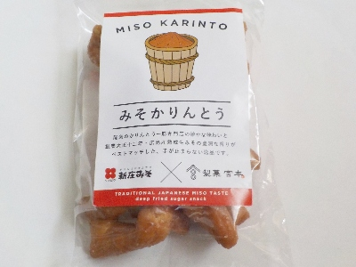

製菓宮本のみそかりんとう。
2024/06/01

新庄みそと製菓宮本のコラボ商品のようです。
一袋に大きなカリントウが6個入っていました。大きいのでなんだかプレッツェルみたい。
カリントウは密度が濃くて質量があるタイプなので歯ごたえがありました。そのぶんカリントウ自体の味がよくわかりました。
小麦味、味噌味ともに美味しいですね。小麦粉と味噌の甘辛さがとてもよく合っていました。
広島県尾道市栗原町1270-144
2024/06/01

新庄みそと製菓宮本のコラボ商品のようです。
一袋に大きなカリントウが6個入っていました。大きいのでなんだかプレッツェルみたい。
カリントウは密度が濃くて質量があるタイプなので歯ごたえがありました。そのぶんカリントウ自体の味がよくわかりました。
小麦味、味噌味ともに美味しいですね。小麦粉と味噌の甘辛さがとてもよく合っていました。